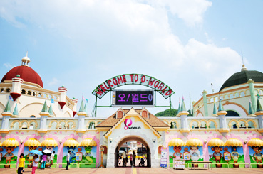

◀메인화면
당신이 선택한 대구. 이런데는 어떠신가요?
당신의 배를 채울 먹을거리!
대구 중구 서문시장은 무려 조선시대부터 이어져 온 대구의 전통시장이라고하네요!
오랜 전통만큼 맛집들도 많고 특유의 특산물들도 많아요!
다양한 먹거리들과 함께 골목을 건너는 재미!
서문시장의 자세한 정보!
다음은 또다른 대구의 시장인 칠성시장입니다!
칠성시장은 특유의 국밥요리와 연탄불고기요리가 유명한데요!
뜨끈뜨끈한 국물요리와 맛있는 연탄불고기 요리를 동시에 즐기고싶으시다면 칠성시장으로!!
칠성시장의 자세한 정보!
배도 채웠겠다 슬슬 보면서 즐기자 볼거리 와 즐길거리!

대구 달서구의 대구수목원!
대구에는 수목원이 되게 크게 존재하는데요!!
엄청난 넓이와 넓이에 비례해 엄청 다양한 종류의 식물들까지!!
다양한 자연학습장과 체험을 할수있는 대구 수목원 가보시죠!
대구수목원의 자세한 정보!